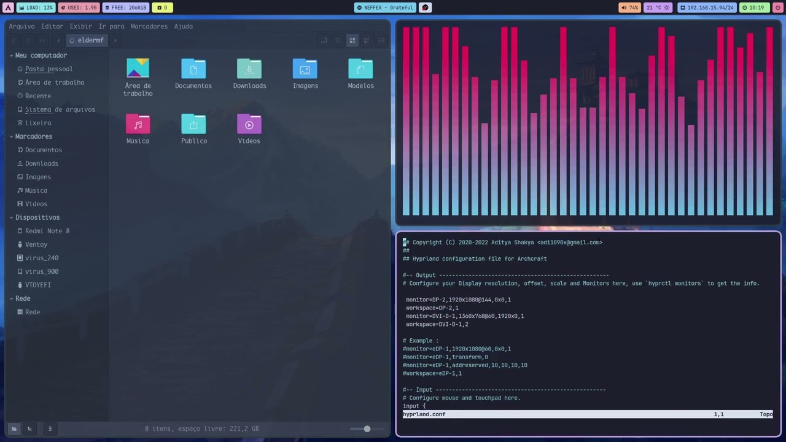

Linux¶
⚡ Introduzione e terminologia¶
- Un Sistema Operativo è composto da centinaia di "pezzi"/programmi diversi.
- Il Kernel è il pezzo piú importante che comunica direttamente col vostro Hardware.
- Linux è un Kernel, non un Sistema Operativo. Tutti i programmi del PC vengono eseguiti sopra il Kernel. Linux in sé non basta, servono altri pezzi sopra di lui per poter usare il PC. È come la CPU, non ci fate niente senza ma nemmeno se avete solo quella.
- Le Distribuzioni (o Distro) sono "pacchetti" che contengono Linux e tutti i pezzi che gli servono per funzionare sopra perché la gente è troppo pigra per leggere un libro da 300 pagine su come scaricarli a mano. Sono come marche di computer già costruiti. Se uno dei pezzi che viene preinstallato nella vostra Distro non vi piace, potete cambiarlo con un altro.
- Il Desktop Environment (o DE) è un altro pezzo (composto a sua volta da altri sottoprogrammi) che vi consente di avere un interfaccia grafica con finestre e tutto invece di un terminale e basta.
- Il Window Manager (o WM) è una delle parti del DE che crea le finestre. Vedremo dopo perché puó essere importante sapere cos'è.
- Il Package Manager è un programma, solitamente da terminale, per scaricare e gestire programmi e pezzi del vostro sistema.
üèÜ Che Distro devo scegliere?¶
Debian e Arch sono le due Distribuzioni piú importanti. Non perché sono le piú usate, ma perché il 90% delle Distro sono basate su di loro. Per esempio, Ubuntu, Mint e Kali sono basati su Debian, mentre Endeavour e Manjaro sono basati su Arch. Le differenze piú importanti tra Distribuzioni derivate da uno o dall'altra sono:
- Gli aggiornamenti: Debian, e i suoi derivati, sono delle Distribuzioni dette a stable release, mentre la famiglia Arch è a rolling release. Debian usa un sistema di versioni a cui molti di voi saranno piú abituati; per esempio, Ubuntu è al momento alla versione 24.10. Ogni versione del sistema arriva con delle versioni dei programmi installati preconfigurati e testati prima di essere pubblicate. Per esempio, KUbuntu (una versione di Ubuntu che usa KDE Plasma) è passata a Plasma 6 pochi mesi fa, anche se quest'ultimo è uscito da anni. Le distro rolling release, invece, vi assicurano sempre l'ultima versione di ogni programma sul vostro PC. Per questo, ci sono letteralmente aggiornamenti ogni 5 minuti. Mentre le stable release sono piú stabili e hanno meno bug, le rolling release vi consentono di non perdere mai un singolo aggiornamento.
- Il package manager: Debian usa
apt, mentre Arch usapacman. Arch, inoltre, supporta la AUR (trovate informazioni a riguardo qua sotto), che permette di scaricare programmi esotici come driver e altre cose senza configurazioni strane.
Detto ció, quale lato dovreste scegliere? Se siete informatici e siete disposti a perdere un po' di tempo a sistemare il vostro PC, andate con Arch. Se, invece, non avete mai visto un terminale, andate con Debian.
Una volta scelto se andare sul lato Debian o sul lato Arch, è il momento di scegliere effettivamente una delle distro basate su di loro:
La scelta migliore per chi non studia informatica. È la piú semplice da imparare per ex-utenti Windows, è leggera, ha la grafica settata bene ed è face da usare.
La distro piú semplice da usare in assoluto, con supporto per praticamente qualsiasi PC, ma odiata dalla community. È "bloated", nel senso che arriva con davvero tanti programmi per soddisfare le esigenze di tutti. È abbastanza pesante, quindi è sconsigliata su PC piú vecchi. Se avete un PC buono e volete solo imparare come funziona Linux, scaricatela pure: ma vedete di cambiarla appena ci fate l'abitudine.
L'originale. È piú complessa da usare rispetto a Mint e Ubuntu, e potrebbe non essere una buona idea se non avete le minime basi informatiche. Se, invece, sapete qualcosina sui computer ma non abbastanza da usare Arch, potrebbe essere un'ottima scelta per voi. È leggerissima e molto stabile, anche se le versioni di alcuni programmi sono piú vecchi di vostra nonna.
Arch Linux senza il dramma esistenziale. Se sapete usare un terminale, è perfetta per voi. Non è difficile da usare se sapete cosa state facendo. È leggera, sicura, supporta NVIDIA direttamente dal download, creata e mantenuta dalla community, e sebbene sia rolling release non si sente parlare di bug in giro. Non ve ne pentirete.
Il punto di non ritorno 
È la distribuzione piú difficile da installare e usare dopo Gentoo, tanto che è un meme nella community. Non avete un programma grafico per installarlo, bensí un terminale, dal quale dovrete fare tutto voi: formattare il disco, settare la locale, scaricare i programmi di bootstrap, installare il DE, e chi ne ha ne metta. Provatela solo quando sarete diventati tutt'uni con Linux - o quando vi sentirete avventurosi.
Ovviamente esistono altre centinaia - se non migliaia - di distribuzioni diverse da quelle elencate. Sentitevi liberi di fare le vostre ricerche e trovare la piú adatta a voi.
üî• Che Desktop Environment devo scegliere?¶
Il Desktop Environment è la parte che presenta la grafica del vostro computer: è colui che determinerà effetivamente l'aspetto del PC. Tutti questi DE possono essere scaricati su qualsiasi distro. Alcuni Desktop Environment importanti sono:
GNOME è un DE molto bello da vedere, anche di default, con un'interfaccia simile a quella del Mac. È stabile e supporta diverse estensioni, ma allo stesso tempo il modo di utilizzo è diverso (ci vuole un po' per abituarsi) e la customizzazione è leggermente limitata rispetto ad altre alternative. Nonstante ció, il design sia del Desktop che delle sue app è davvero fantastico. È leggermente pesante, occupa circa 1 o 2 giga su disco, e quindi non è consigliato per PC piú vecchi.
Plasma è un DE un po' meno carino di default, ma customizzabile come la morte. Potete SERIAMENTE farlo diventare uguale a Windows o a Mac. Ha un'interfaccia molto simile a Windows e quindi semplice da usare (anzi, Microsoft ha rubato tante funzionalità da Plasma e le ha messe su Windows). Anch'esso è pesantuccio, sempre su 1/2GB di archiviazione, e quindi non adatto a computer meno recenti.
XFCE è un DE molto basico ma anche leggero. Forse non è il più bello di tutti, ma pesa pochissimo (121Mb, app incluse) ed è perfetto per chi ha un PC più vecchio. Anch'esso ricorda quasi l'interfaccia di qualche versione vecchia di Windows e pertanto non è troppo difficile imparare ad usarlo. Non lasciatevi ingannare, peró: con un po' di determinazione potete customizzarlo e farlo diventare davvero bello.

Hyprland è una cosa a parte.
Non è un DE, bensì un Window Manager (o WM, come accennato prima).
Il WM è uno dei tanti componenti di un DE, il quale si occupa di creare e mostrare le finestre sul vostro Desktop. Hyprland è solamente un WM, nel senso che se lo installate avrete letteralmente solo finestre sul vostro PC. Niente barra delle applicazioni, niente programma per le impostazioni, niente notifiche, niente popup quando dovete inserire la password, niente barra del titolo con tasto di chiusura, nulla. Solo il vostro mouse, e le finestre che aprite. Se volete aprire un programma, con Win+Q aprite un terminale ed eseguite il programma da lì.
Per di più, è un tiling Window Manager, cioè le finestre non sono libere di muoversi ma sono "snappate" a griglia, come nella foto. Ovviamente potete scegliere quale finestra sta dove, e con qualche programma potete renderle libere, ma la base è questa.
Ovviamente un PC così è inutilizzabile (o meglio, semplicemente molto scomodo); potete scaricarci i diversi pezzi mancanti sopra per aggiungere le funzionalità che mancano, come un notification daemon per vedere i popup delle vostre notifiche, waybar per avere una barra delle applicazioni o una topbar come su GNOME, hyprpaper per mettere gli sfondi che volete, etc.
Un'altra pecca è che dovete configurare tutto a mano, nel senso che non esistono applicazioni grafiche per le impostazioni di Hyprland, Waybar, Hyprpaper e compagnia: dovete aprire un file .conf o qualsiasi mistico formato il vostro programma usa, e modificarlo da lì.
Vi starete chiedendo: perché soffrire tanto? Un paio di ragioni includono:
- È leggerissimo: pesa 60Mb su disco, ed essendo solo un WM influisce molto di meno sulla RAM. Il vostro PC non lo sentirà neanche;
- È adattivo: visto che voi installate solo i pezzi che vi servono e che volete, nessuno bit dello spazio occupato sul vostro distro viene sprecato: con un DE come GNOME, avete centinaia se non migliaia di funzionalità e programmi che non utilizzate, non perché i creatori di GNOME siano cattivi ma perché sono stati messi per rendere GNOME il più semplice da usare per tutti. Con Hyprland, invece, ogni microscopico programma che installate è qualcosa che vi serve, risultando in un PC con il minimo indispensabile;
- È fighissimo: è stato creato da un utente di r/unixporn su Reddit (qui il post del bastardo), in risposta a tutti i rice che venivano pubblicati, e il suo scopo pricipale è essere figo. Le cose che potete creare sono mozzafiato.
Scaricare più DE¶
Guida in arrivo...
üôè Installare Linux¶
Guida in arrivo...
üì¶ Le repository e la AUR¶
I Package Manager scaricano i pacchetti da delle repository, cioè degli "indici" che specificano dove sono installati questi pacchetti.
Su sistemi basati su Debian, per scaricare molti programmi, si deve aggiungere la loro repository ad apt se il programma non è incluso in quelle di sistema.
Su Arch, invece, esiste una repository speciale chiamata AUR, dove qualsiasi utente puó pubblicare il suo programma/pacchetto esotico o la versione beta di uno esistente.
Si trova davvero di tutto nella AUR.
La AUR non è integrata dentro pacman, bensì vi si deve accedere con un AUR helper, cioè un Package Manager che appunto permette di scaricare pacchetti dalla AUR. Il più famoso e più utilizzato è yay.
üìÇ I file¶
~ è la vostra cartella home, l'equivalente di C:\Users\USERNAME su Windows.
È un alias per /home/USERNAME.
Sotto ~/Desktop (o /home/USERNAME/Desktop) trovate il Desktop, su ~/Downloads i Download, etc.
Sotto /home trovate tutti gli utenti.
/ è la cartella root che contiene tutti i file di Linux.
Niente di particolarmente difficile.
üõ†Ô∏è yay¶
Attenzione
Questa sezione riguarda solo le distribuzioni basate su Arch.
Nota
yay è pre-installato su EndeavourOS.
Per scaricare yay:
cd /tmp
sudo pacman -Syu git base-devel
git clone https://aur.archlinux.org/yay.git
cd yay
makepkg -si
Cercare pacchetti¶
Digitate semplicemente il nome del pacchetto che volete cercare:
yay <package>
Scaricare pacchetti¶
Per scaricare un pacchetto:
yay -S <package>
Molte volte yay vi farà tante domande, e se non sapere cosa vi sta chiedendo è meglio lasciare le opzioni che vi da di default. Per farlo, passate --noconfirm al comando:
yay -S <package> --noconfirm
Aggiornare il computer¶
Per aggiornare tutti i programmi sul PC, basta scrivere:
yay
Potete anche aggiungere --noconfirm:
yay --noconfirm
Potete aggiornare il PC mentre scaricate un pacchetto:
yay -Syu <package>
E mescolare il tutto:
yay -Syu <package> --noconfirm
üéÆ Gaming¶
Guida in arrivo...